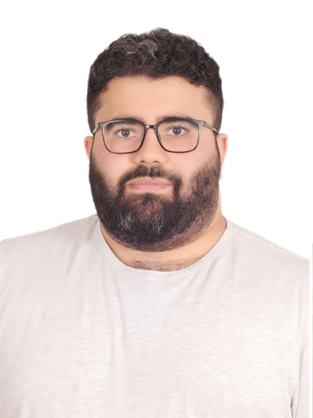

I hold a bachelor's degree in computer engineering from Galatasaray University. I have developed a broad skill set
across computer graphics, computer vision, game and application development, data engineering, DevOps, IoT,
embedded systems, web development, and parallel computing. I am proficient in programming languages including C,
C++, CUDA, Python, Java, HTML, CSS, PHP, and JavaScript. Additionally, I have practical experience with various
Amazon Web Services such as EC2, Lambda, Glue, S3, and DynamoDB.
I was recently accepted into the master’s program at Middle East Technical University, where I will be
specializing in computer graphics to further advance my knowledge and contribute to innovative projects in this
field.
Galatasaray University
Bachelor of Science - BS, Computer Engineering
2018 - 2024
Middle East Technical University
Master of Science - MS, Computer Engineering
2025 - 2027
Data Structures, Algorithms, C, C++, CUDA, Python, Java, JavaScript, PHP, Web Development, Laravel, Node.js, React.js, DevOps, Data Engineering, Large Language Models (LLM), Embedded Software, Full-Stack Development, Parallel Computing, Computer Graphics, DirectX, OpenGL, OpenGL Shading Language (GLSL), Emscripten, WebAssembly, WebGL, Game Development, SDL, Win32 API, OpenMP, Pandas, SQL, PostgreSQL, MongoDB, Amazon Web Services (AWS), AWS Lambda, Amazon S3, AWS Glue, Amazon Dynamodb, Amazon Simple Notification Service (SNS), Amazon Elastic Container Registry (ECR), Amazon Athena, Amazon EC2, AWS Elastic Beanstalk, Amazon EKS, Flask, HTML, Cascading Style Sheets (CSS), Git, GitHub, Containerization, Kubernetes, Analytical Skills
Sep 2023 - May 2024
I developed a voxel-based game engine using C/C++ and OpenGL as my graduation project at GSU. The engine includes integrated AI support, showcasing both advanced graphics programming and intelligent system design. Repository of the project is here: https://github.com/SUKRUCIRIS/AI_enhanced_Voxel_Game_Engine
May 2025 - Present
I develop a variety of applications and distribute them through my own app store at apps.sukruciris.com
Jan 2025 - Present
I create and share Turkish programming education videos on my education website: egitim.sukruciris.com